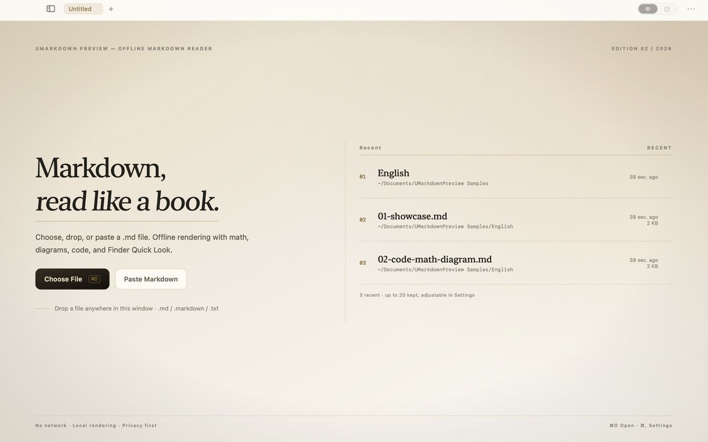
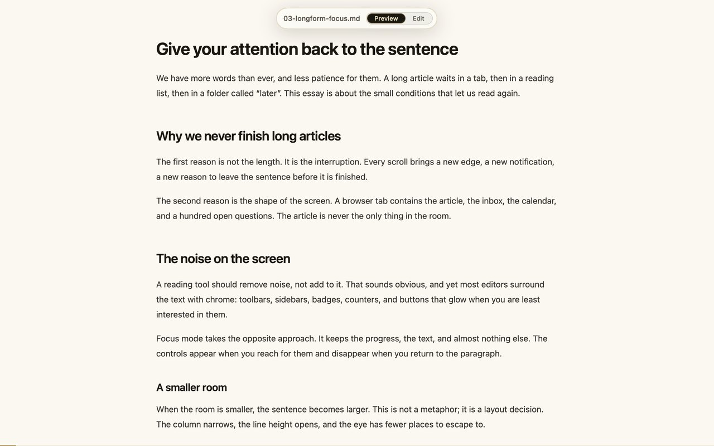
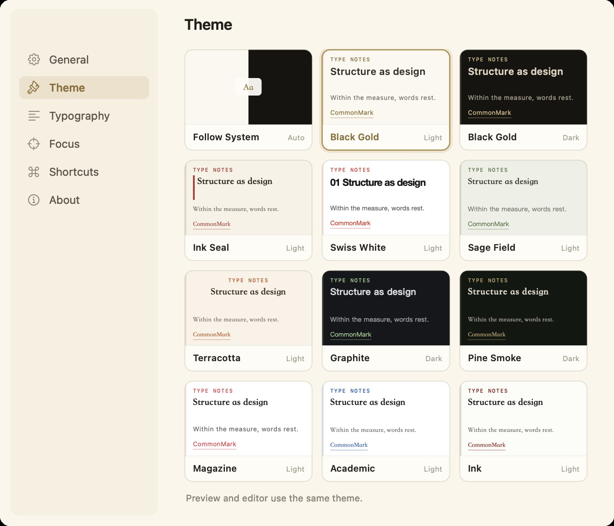
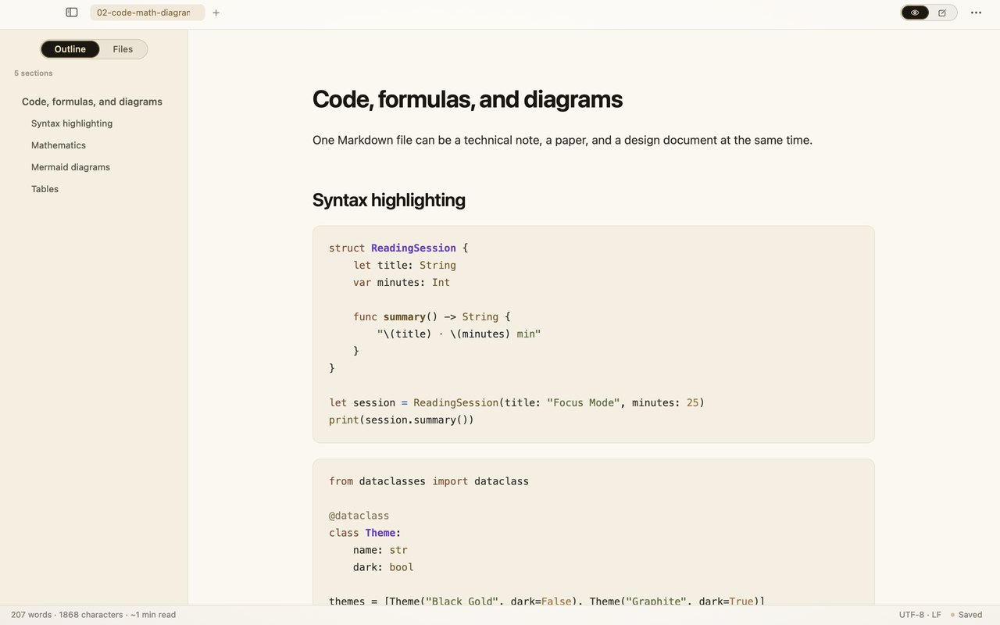
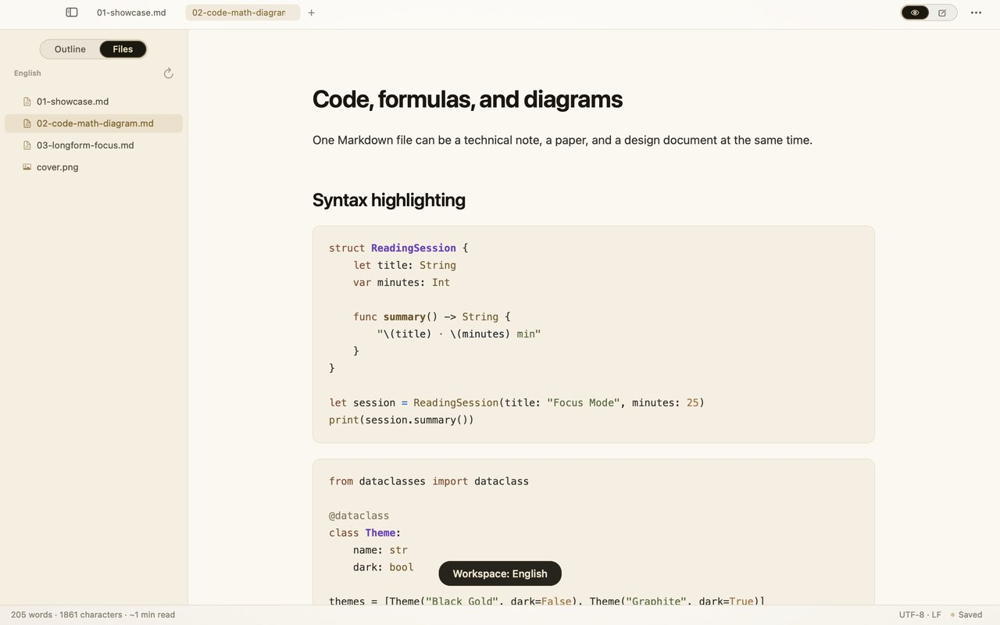

Offline Markdown reader · macOS
Markdown,read like a book.
A quiet, native Markdown reader and focus editor for macOS. Black-gold design, twelve theme options, folder workspaces, math and diagrams — and a reading space that stays out of your way.

01 — Read
A quieter reading space.
The window falls away. What remains is the text, a clear outline, and a gold line that tells you how far you have come.
- 01
Focus Mode
Press ⌘⇧F and the window strips down to the paragraph. A progress capsule sits at the top; the controls appear only when you reach for them.
- 02
Twelve theme options
Follow the system, or choose Black Gold light/dark, Ink Seal, Swiss White, Sage Field, Terracotta, Graphite, Pine Smoke, Magazine, Academic, or Ink.
- 03
Native typography
Warm paper, a configurable outline, and text that stays sharp on Retina and 1× displays.

Themes
One document. Twelve ways to see it.
Preview and editor share the same theme. Change it once and the whole reading room follows.

02 — Write
Keep your attention in the sentence.
Editing should not feel like operating a machine. The editor stays out of the way: typewriter mode, autosave, and syntax highlighting that matches the preview.
- 01
Typewriter mode
The caret stays near the middle of the screen, so long documents never pull your eyes to the bottom.
- 02
Autosave
One second after you stop typing, the file is written quietly to disk.
- 03
Editor syntax highlighting
Fenced code blocks are highlighted in the editor, including inside quotes and nested lists.

03 — Work
A workspace that finally feels like one.
Open a folder, not just a file. The sidebar loads by level, tabs keep several documents close, and the command palette finds anything with a few keystrokes.
- 01
Folder workspaces
Lazy-loaded trees, inline rename, reveal in Finder, and open Terminal here.
- 02
Tabs & session restore
Quit and reopen; windows and tabs return where they were.
- 03
Quick open
Press ⌘⇧P for a frosted command palette with fuzzy matching for files and commands.

05 — Privacy
Private by design.
Everything renders on your Mac. No accounts, no analytics, no tracking. The app makes no network requests and collects no data.
Read the privacy policyOpen a file. Start reading.
UMarkdownPreview 2.0 is available on the Mac App Store.
Download on the Mac App Store